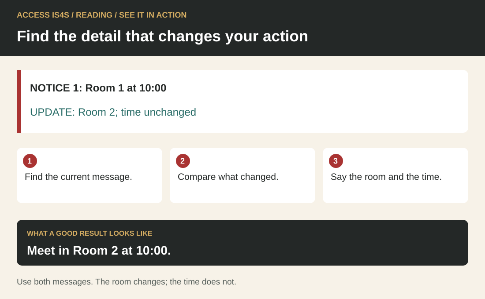

Reading: find what you need and use it well
Reading helps you turn a document into a useful action. You might check the room for a training session, compare two travel choices, understand a project notice or find out what a form is asking. Reading includes words, symbols, pictures, tables and diagrams. It also includes deciding that a document does not provide enough information to act.
You already bring ways of making sense of information. You may recognize a familiar route, notice an unclear instruction, remember a useful heading or ask someone to explain a new term. This chapter builds a repeatable process around those strengths. You can use the fictional situations throughout. You do not need to share personal records, family information or knowledge that you prefer to keep private.
All organizations, timetables, messages and project arrangements in this chapter are invented teaching cases. They are complete enough for the activities, but they are not live travel advice, workplace procedures or announcements. Read them as practice documents. For real decisions, obtain the actual current document and check its applicability.
See it in action · Reading

Read the visual description
NOTICE 1: Room 1 at 10:00. UPDATE: Room 2; time unchanged. Find the current message. Compare what changed. Say the room and the time. Meet in Room 2 at 10:00. Use both messages. The room changes; the time does not.
This small fictional example shows the skill in use. NOTICE 1: Room 1 at 10:00. UPDATE: Room 2; time unchanged.
Try it: Find the current message. Compare what changed. Say the room and the time.
Check your result: Meet in Room 2 at 10:00. Use both messages. The room changes; the time does not.
Six parts of a useful reading process

Read the visual description
An original task illustration occupies the left panel; six numbered actions appear on the right. Let the question and document guide your next move. Six connected components: Identify the reading task; Find the information; Connect related details; Understand and apply; Evaluate the document; Reflect on the document. Return to any action when you need to check meaning or evidence.
The Skills for Success Reading components are:
- Identify the task that requires you to read. What are you trying to find out or do?
- Identify the information contained in the document(s). What is here, and how is it organized?
- Make connections between different parts of the document(s). Which details belong together?
- Understand and apply the information. What does it mean for this particular task?
- Evaluate the document(s). Is the information suitable, clear, credible and sufficient?
- Reflect on the document(s). Who is it written for, how does it work, and what should you carry forward?
These are connected actions, not six boxes you must complete in a fixed order. A confusing footnote may send you back to the heading. A missing date may stop you from using an otherwise clear instruction. The aim is an accurate understanding, with a reason you can explain.
Choose supports that let you work with the text: larger print, a ruler under a line, a glossary, text-to-speech, a reading partner or extra time. Keep track of the support used. You can demonstrate comprehension by pointing to evidence, explaining aloud, using an accessible communication method or writing. This chapter does not require polished writing to prove that you understood a reading.
Build a word, read a phrase, use its meaning
Practise privately, with a partner or through an agreed accessible format. No one needs to read aloud to the group. Keep track of whether you recognized the printed word yourself, used audio access or received help with its meaning. These are useful but different observations.
Start with a small observation
Look at return, returned, check, checked, available. Identify a familiar word, use it in a classroom sentence and read a short phrase. If these words are already familiar, move to the notice practice. If a word becomes clear after someone says it, compare the spoken word with its letters and practise it in a useful phrase.
See a useful word part
Compare check → checked. Point to the shared letters. Adding -ed here shows a completed action. In this word the ending sounds like /t/; the spelling still records -ed. Compare return → returned, where the ending sounds like /d/. The same spelling can have different sounds; use the whole word to check its pronunciation. Read “the helper checked the kit” and explain which action is complete.
Break unavailable into un + available: in this notice, un- reverses the meaning. Say the base word, read the whole word, then test its meaning in “The kit is unavailable today.” A word part is a clue; the sentence confirms whether that meaning fits.
Try with support: choose from checked / check / unavailable / available. Complete “Please ___ the code before the loan” and “The kit is ___ because it is already lent.” Explain your choice. Then compare “return pending” with “returned and checked.” Identify which record still needs an action.
Read a short passage in meaningful phrases
The practice desk opens at ten. / A helper checks the kit code / before handing over a folder. / The learner checks the return time. / If the folder is unavailable, / ask about another suitable resource. / Do not assume that a reserved item is free to take. / A learner can ask for a printed reminder / without explaining private reasons. / Keep the agreed return point / with the practice record.
Listen to one sentence read by your instructor if helpful, then explain its meaning. Read it together or reread a short chosen part, using the slashes as optional phrase guides. Answer: What happens before a folder is handed over? What should happen if it is unavailable? Return to the words that support the answers. Fluency here means readable phrasing that supports meaning; faster reading is not the goal.
Fresh exit passage
Remove the model passage while using this new text:
A learning pack is ready for collection at two. The helper must check its code before recording the loan. The pack includes a return slip. If a requested pack is unavailable, ask the helper to check another option. A reserved pack belongs to an agreed booking. Do not remove it without confirmation.
Identify check, unavailable and reserved. Explain the collection condition and what to do if the requested pack is unavailable. Reread after feedback if useful. Keep word help, phrasing help and comprehension help separate in your note.
Check after your attempt: collection is at two, subject to the helper's code check before the loan is recorded; ask the helper to check another option if unavailable; reserved is not unrestricted availability. If a word needs more practice, name it and ask for a useful example. When you can locate the condition with your agreed supports, continue to “Build useful vocabulary” and connect information from a short paragraph and table. You can agree more focused word-reading practice without repeating a whole long case.
Begin with the task, then preview the document
Before reading every word, finish this sentence: “I need this document so that I can….” A precise purpose narrows the search. “Find the check-in room for a first visit” is more useful than “read the schedule.” A person looking for lunch arrangements may use the same document differently.
Preview the title, date, sender, headings and document type. A table usually lets you compare categories. A paragraph may explain a condition. A diagram shows relationships or location. Skimming gives you the general message. Scanning helps you locate a specific item. Close reading checks the exact wording around that item. Strong reading often uses all three.
Case document A: a first visit to the training room
Fictional Northside Learning Room • Welcome note • Version 2, issued for Practice Day 1
Purpose. This note explains the classroom visit for people attending the introductory learning session. It replaces the earlier draft that named Room 3. All activities described here take place in classrooms. There is no equipment operation or worksite tour during this visit.
Arrival. Please arrive at the reception desk between 08:40 and 08:55. Reception is beside the main entrance. A staff member will check your learning ID and direct you to Room 2. If you do not have a learning ID, reception will provide a temporary classroom label. You do not need to bring identity documents for this fictional practice activity.
What to bring. Bring a pen or use one supplied in the room. Printed workbooks and calculators will be available. A phone is optional. The activities can begin on paper, and a shared device will be available for the later digital task. Tell the instructor if you would like enlarged print, a quiet reading space or another available support. You can ask privately.
Changes. The introductory session ends at 11:30. An optional resource-table visit follows until 11:50. The resource table is not part of the required session. A separate afternoon session appears on the building schedule, but it is for a different group. If two documents seem to disagree, ask reception which version applies to your group before changing your plan.
If needed, scroll across this table. Keyboard: focus the table, then use the arrow keys.
| Time | Introductory group activity | Place |
|---|---|---|
| 08:40–08:55 | Check in | Reception |
| 09:00–10:10 | Welcome and learning tasks | Room 2 |
| 10:10–10:20 | Break | Classroom or nearby seating |
| 10:20–11:30 | Practice and review | Room 2 |
| 11:30–11:50 | Optional resource table | Room 1 |
State the reading task
You are helping a fictional learner prepare for their first visit. They ask, “Where do I go first, and do I have to stay after 11:30?” State two precise reading goals. Locate the part of document A that answers each goal. Explain why the afternoon session mentioned in the note is not relevant to this person's plan.
Preview before you search
Identify the document's audience, purpose and version. Name two features that help you find information. Then choose how you would begin each task: skim for an overview, scan for a time, or read a paragraph closely for a condition. Use these tasks: understanding the visit generally; finding the break time; deciding whether a phone is required. Explain one choice.
Worked example 1: a word that changes the answer
Question: Must every introductory learner attend the resource table?
First identify the requested information. “Must every learner” asks about a requirement, not whether the table exists. Scan for “resource table.” Read both the table row and the paragraph headed Changes. The row says “Optional,” and the paragraph says it is not part of the required session. Together they support: No. The required session ends at 11:30; the resource table is optional.
The competing detail is its appearance on the schedule. A scheduled event is not automatically compulsory. Reading the label prevents that mistake. Words such as optional, required, before, after, except, only and unless deserve close attention because they limit a general statement.
Build useful vocabulary
Use document A to explain optional, replaces, temporary and applies in this context. Give the nearby words that helped you. Choose one term and make a new classroom example using it accurately. If you know a useful equivalent in another language, you may add it for your own use; sharing it is optional. Check uncertain meanings with a glossary, partner or instructor rather than guessing silently.
Find the information, including its limits
A good search follows the question. Who usually asks for a person or role. Where asks for a place. When asks for time or a condition. Which asks you to select between options. Why often needs a reason across more than one sentence. Underline the requested information and any limits before searching.
Tables need the same care as sentences. Read the title, column headings, row labels and notes. Keep a finger or pointer on the row while moving across it. Do not take a number from a nearby row because it looks familiar. A symbol's meaning comes from its legend, not its shape alone. An asterisk might identify a footnote; it does not always mean a warning.
Case document B: choosing a classroom journey
Fictional practice journey planner • Day 1 only
The learner starts at Cedar Stop and needs to reach the Northside Learning Room reception by 08:55. This is a fictional route exercise. The timetable does not describe a real service. All listed journeys run on the practice day. The learner can choose either route, and no fare calculation is needed.
Route A is direct. It arrives at Northside Stop, which is beside the learning room's main entrance. Allow five minutes between the listed arrival and reaching reception. That allowance is a task assumption, not a measured travel time for a real person. If a learner needs a different allowance, the plan must be reconsidered using that requirement.
Route B involves a connection at Market Stop. A connection is usable in this exercise only if the first vehicle arrives at least five minutes before the next departure. The second vehicle also arrives at Northside Stop. Add the same five-minute reception allowance. The table shows the individual services; it does not promise that every combination makes a connection.
If needed, scroll across this table. Keyboard: focus the table, then use the arrow keys.
| Service | Leaves Cedar | Arrives Market | Leaves Market | Arrives Northside |
|---|---|---|---|---|
| A1, direct | 08:05 | — | — | 08:35 |
| A2, direct | 08:25 | — | — | 08:55 |
| B1, first leg | 08:10 | 08:25 | — | — |
| B2, second leg | — | — | 08:28 | 08:43 |
| B3, second leg | — | — | 08:32 | 08:47 |
Legend: A dash means the field does not apply to that service. It does not mean a cancelled trip. A service number identifies one row, not a whole journey with a connection.
Scan accurately
Find the departure and arrival for direct service A1. Identify which service leaves Market at 08:32. Explain what the dashes in that row mean. Point to the heading and legend that support your answers. You may say the answer aloud while marking the row instead of copying the whole timetable.
Read the condition
A classmate says, “B1 arrives before B2 leaves, so the connection works.” Find the exact condition that must be checked. Does the statement meet it? Explain using the times and the minimum connection allowance. Then identify a different second-leg service that can be combined with B1.

Read the visual description
A proportional timetable shows B1 arriving at Market at 08:25. The required connection allowance is five minutes. B2 leaves at 08:28, giving only three minutes; B3 leaves at 08:32, giving seven. The earliest usable departure is 08:30. B1 plus B3 reaches Northside at 08:47; five minutes to reception gives 08:52, before the 08:55 deadline.
Worked example 2: combine a table and a paragraph
Question: Does direct service A2 meet the reception deadline?
The row gives an arrival at Northside of 08:55. The paragraph requires a further five-minute allowance to reception. Therefore the task's reception time would be 09:00. That is later than the 08:55 deadline. A2 does not meet the requirement in this exercise.
The reading challenge is to connect “arrives Northside” with “reaches reception.” They name different points. The arithmetic is small, but finding the relevant rule is essential. If the table's heading had already been “Arrives reception,” adding the allowance again would be wrong. Check what a number represents before calculating.
Choose with evidence
Choose two journeys from document B that meet the reception deadline. For each, identify the service or services, Northside arrival, reception allowance and planned reception time. Explain a difference between the two choices without claiming that one is best for every learner. Now change the reception allowance to ten minutes: which of your choices still meets the deadline?
Connect details without inventing missing facts
Some information is stated directly. Other information can be inferred by combining details. An inference is a reasoned conclusion, not a free guess. “The project needs both a place and a time” can follow from an invitation that asks people to attend. “The project is behind schedule” does not follow merely because an invitation was revised.
Use four labels while reading: stated, supported inference, contradicted, and not established. A contradicted statement conflicts with the document. An unestablished claim needs information the document does not provide. Keeping those separate helps you notice the exact question that still needs an answer. You do not have to force every document into a complete story.
Case document C: who is responsible for what?
Fictional Willow Reach access project • Public learning brief, version 1
The fictional Town of Willow Reach owns an access route serving a recreation centre and a delivery area. The Town's project team describes what the project must achieve, manages the agreement with the contractor and checks the delivered work against that agreement. The fictional Pathway Paving Company is the contractor. It carries out the work it has been engaged to deliver. The roles of owner and contractor are different even when both are working toward the same project outcome.
The practice funding plan contains $60,000 from the Town, $40,000 from the fictional Regional Access Fund and $20,000 from the fictional Community Route Fund. These names and amounts are invented. Contributing money does not, by itself, make a funder the road owner. The funding amounts also do not tell us a contractor's profit, a worker's pay or the cost of each activity.
This learning brief is about roles and questions. It does not supply a work schedule, a traffic plan, operating instructions, environmental findings or legal permissions. The project team would need current applicable documents for a real project. For this classroom exercise, questions about ownership go to the Town's project contact; questions about the contractor's proposed classroom display go to Pathway's training contact. Neither contact has been given authority here to answer for the other organization.
Notice for learners. A classroom information display will explain where paving material comes from and how the project roles differ. Visitors are asked to identify questions they would want answered before a real project begins. No visitor should treat this practice display as a notice of actual construction.
Town of Willow Reach: owner and project team
│ engages a contractor for described work
▼
Pathway Paving: contractor
Town contribution + two fictional funds: funding plan
Funding contribution alone does not establish ownership.
Follow the role, not the familiar name
Who owns the route? Who carries out the contracted work? Which contact would receive a question about ownership? Which would receive a question about the contractor's classroom display? Cite a sentence for each decision. Explain why the funding paragraph is insufficient to identify a contractor's profit.
Separate evidence from assumption
Label each statement stated, supported inference, contradicted, or not established: “The Town and contractor have different roles”; “More than one organization contributes to the practice funding”; “The contractor owns the road”; “Construction starts next Monday”; “The brief is suitable for deciding the legal permits for a real job.” For a statement that is not established, name the missing document or detail rather than simply saying “wrong.”
Use both forms of the message
Compare the diagram and paragraphs in document C. Identify one fact both forms communicate, one qualification that is clearer in the paragraphs and one question neither form answers. Then choose which form you would use for a quick introduction and which you would consult for a responsibility question. Your choice must refer to the information needed, not only to personal preference.
Evaluate a document before relying on it
A clear-looking document can still be unsuitable. Ask who produced it, when and for what audience. Check whether it names its sources and explains its limits. Consider the difference between a sales claim, an official project instruction, a personal opinion and a classroom example. These can all be useful for different purposes; their authority is not interchangeable.
Check the actual claim, too. “Always” requires much stronger evidence than “in this example.” A photograph may show an item without proving how it performs. A newer date helps identify a version, but newer does not automatically mean accurate or applicable. A document needs both a traceable source and relevant content.
Case document D: two environmental messages
D1 • Fictional promotional card. “Our nearer supply source proves asphalt is always greener than concrete. Save time: there is no need to compare alternatives.” The card supplies no author, study, date, quantities, transport assumptions or definition of “greener.”
D2 • Fictional classroom comparison note. “The example lists one source for an asphalt option at 20 km from the work area and one source for a concrete option at 50 km. The distances are invented. They describe one-way routes, not total travel. Quantities, number of trips, vehicle loads, production impacts, maintenance and design-life information are missing. The note cannot rank the total environmental impact of the two options. A fair comparison would need the same project purpose and comparable service requirements, together with relevant evidence for the impacts being considered.”
Judge what a claim can support
Identify D1's main claim and two features that make it unreliable for a whole-project environmental conclusion. State the limited comparison D2 permits. Name two missing facts that would matter before making a broader comparison. Explain how D2's admission of limits affects its usefulness for this reading task.
Worked example 3: resolve a version conflict

Read the visual description
Two document specimens show an earlier introductory-group draft with Room 3 and a version 2 notice that explicitly replaces it, names Room 2 and requires check-in first. A route below moves from the entrance to reception during 08:40–08:55, then to Room 2 after check-in.
An old classroom notice says, “Introductory group: Room 3.” Document A says “Version 2,” identifies the introductory audience and explicitly replaces the earlier Room 3 draft. It directs learners to Room 2 after reception. For this fictional visit, use the Room 2 instruction and check in first. This conclusion depends on the replacement statement and matching group, not only on a bigger version number.
If the second document were for a different group, its newness would not settle the conflict. If neither document identified which one applied, the next action would be clarification. Reading well includes knowing when a comparison cannot be resolved from the available evidence.
Inspect a source record
Compare these supplied records: Record X: “Equipment guide,” screenshot, no issuer or edition. Record Y: “Classroom equipment-purpose cards,” prepared for this workbook, labelled introductory, no operating instructions. Which could support identifying the intended purpose of this workbook's card activity? Could either justify operating equipment? List three additional details you would seek before relying on an actual technical document. Do not invent those details.
Apply a precise update
Read this fictional update: “Practice Day 1, introductory group only: check-in remains at reception. The 10:20–11:30 practice block moves to Room 4. The 09:00 welcome remains in Room 2. Issued as an update to Welcome Note version 2.” Identify exactly which table entry changes and which entries stay the same. Explain why rewriting the entire day as “Room 4” would be inaccurate.
Reflect on how the document works
Reflection includes looking back at the document, not only judging yourself. Who needs the information? What does the writer emphasize? What evidence is offered, and what is left out? Does the structure help the intended audience? A short notice can be effective because it removes unnecessary detail, yet become misleading if it removes an essential condition.
Your reading process also matters. Notice where you first looked, what slowed you down and what helped you recover. “I am bad at tables” is a broad judgement with no next action. “I skipped the heading, so I compared workers with employers” identifies a habit you can change. Keep the observation connected to an actual example.
Case document E: borrowing a classroom resource
Fictional resource desk guide • Current classroom copy
The resource desk lends practice books and calculators during the learning block. A learner may borrow one calculator and up to two books at a time. Each item has an item code. The code identifies the item, not the borrower. The classroom borrowing sheet uses learning IDs so that personal details do not need to appear in the activity.
To borrow an available item, tell the desk helper its code and your learning ID. The helper records the item and the agreed return point. “Available” means the desk can lend it now. “Reserved” means the item is set aside for another booking. “In use” means it has already been lent. These labels can change, so the desk helper checks the current sheet before agreeing to a loan.
The guide is written for learners who want a resource during the classroom block. It does not describe a public library account or a charge. If an item is unavailable, choose another suitable resource or ask when it may become available. The guide does not promise a return time for an item marked “In use.”
If needed, scroll across this table. Keyboard: focus the table, then use the arrow keys.
| Item code | Item | Status at the time of this exercise |
|---|---|---|
| C04 | Basic calculator | Available |
| C05 | Large-display calculator | Reserved |
| B12 | Measurement practice book | In use |
| B16 | Document-reading practice book | Available |
Read for audience and purpose
Who is document E written for? What practical decision does it help them make? Identify one feature that helps a first-time borrower and one detail deliberately outside its scope. Explain why the sentence about learning IDs belongs in this document even though it does not describe the equipment.
Apply the conditions
A learner wants C04 and B16 immediately. Another wants C05 and needs a specific display feature. Use the guide and status table to explain the next step for each. Do not tell the second learner that an unsuitable alternative must meet their needs. What can the document establish, and what should the desk helper clarify?
Notice what a summary loses
A proposed sign reads, “Borrow any calculator and two books. Give your details to the helper.” Compare it with document E. Identify three ways the sign could mislead a reader or remove a useful protection. Explain the information that a corrected sign should retain. You may annotate the sign and explain aloud; writing a polished replacement is optional.
Transfer the process to a different setting
The same reading habits work across trades, service work, study and everyday planning. The document changes; the need to identify purpose, conditions, evidence and gaps remains. Transfer does not mean assuming that a rule from one setting applies somewhere else. It means bringing the process of checking.
Independent transfer: booking a practice room
Use this complete fictional booking note: “Room East holds up to eight people and is available 13:00–14:00. Room West holds up to twelve and is available 13:30–15:00. Bookings need a ten-minute setup period before the meeting, within the room's available time. A group of ten wants a 45-minute meeting starting at 14:00. Ask the desk to confirm any booking; this note is not a reservation.” Select a suitable room, explain how the size and time conditions connect, and identify the remaining action. Then explain what changes if the meeting must start at 13:30.
Show your reading route
Choose document A, B, C or E. Ask a partner to choose a new detail question using only that document. Before answering, state the information you need, show where you look and explain any condition you checked. Then swap roles. If the answer is missing, identify that clearly. Keep the partner's question and the evidence you used so the instructor can observe your reading, not merely your memory.
Compare and reflect
Compare the promotional card D1 with the resource guide E. Explain their audiences, purposes and use of evidence. Point to language that attempts to influence the reader. Select one reading strategy that helped you in an earlier activity and one situation where it was insufficient on its own. Choose a next practice task from this chapter, naming the detail you will check more deliberately. You can provide your reflection orally with marked documents.
Keep evidence of what you can do
Identify the task that requires you to read
“State the reading task”, “Preview before you search”, “Show your reading route”: clear purpose and requested information.
Identify information in documents
“Build useful vocabulary” through “Read the condition”: vocabulary, headings, rows and conditions.
Connect parts of documents
“Choose with evidence” through “Use both forms of the message”, “Apply a precise update”: paragraphs, tables, diagrams and updates used together.
Understand and apply information
“Follow the role, not the familiar name”, “Apply the conditions”, “Independent transfer: booking a practice room”: a justified decision for the specified case.
Evaluate documents
“Judge what a claim can support” through “Apply a precise update”, “Notice what a summary loses”: source, scope, version and adequacy checked.
Reflect on documents
“Read for audience and purpose”, “Compare and reflect”: audience, purpose, language and evidence considered.
Use the local feedback descriptions Not observed, Not yet demonstrated, Demonstrated with support and Demonstrated independently. Record transfer separately when you use the process in a new situation. These descriptions are not official proficiency levels. Keep a marked document, a short explanation and the support used. Together they give a more useful picture than speed alone.
Reading · fresh document checks
Use the form selected by your instructor. Read the supplied documents and show which words, rows or conditions support your answers. You may mark the document and explain through an agreed communication mode. Writing polish is not the focus. Ask for the agreed access tools before starting. All information is fictional; do not visit or contact a real service.
Form A · Pick up a practice kit
A1 · Earlier notice, issued Practice Monday
The introductory learning group can collect its reserved practice kits at Counter East on Practice Friday, 13:00–13:30. Bring the kit code and your learning ID. This is a classroom collection arrangement.
A2 · Correction, issued Practice Tuesday
For the same introductory learning group and Practice Friday collection: Counter West replaces Counter East. The collection window remains 13:00–13:30. Bring the kit code and learning ID as previously stated. A helper must check the current counter record before handing over a kit. This correction replaces A1's location only. A separate evening group uses Counter East at 17:00; that arrangement does not apply to this group. Ask the course coordinator when information cannot be confirmed.
A3 · Counter record for the exercise
If needed, scroll across this table. Keyboard: focus the table, then use the arrow keys.
| Kit code | Resource | Status | Collection condition |
|---|---|---|---|
| P14 | Large-print process cards | Reserved for the introductory group | Helper checks code and learning ID. |
| P18 | Standard process cards | In use | No return time has been supplied. |
| N22 | Number practice kit | Available | Helper checks the current record and agrees a loan. |
“Reserved” means set aside for the named group. “Available” means a loan can be discussed now, not that the item has already been booked. “In use” means currently lent. A request for a particular format does not require a learner to explain private reasons. The counter record says nothing about transport or a charge.
Reading practice A · Find the current instruction
Where and when should the introductory learner collect P14? What must they bring, and what must the helper do? Mark the source for the location, unchanged time and collection condition.
Reading practice A · Connect the records
A peer says, “I will go to Counter East at 17:00 because the correction mentions it.” Explain the problem using the audience and replacement wording. Then explain whether P14 and P18 can both be promised for collection at 13:00.
Reading practice A · Check a summary
A proposed summary says, “All kits are ready. Bring identity documents to Counter West any time Friday. Transport is included.” Identify four unsupported or contradicted claims. For one claim, distinguish “the documents say something different” from “the documents do not say.”
Reading practice A · Explain your next step
You receive an undated cropped image saying only “Counter East.” Explain what it cannot establish, where you would seek confirmation and one part of your reading process that helped you. Do not invent the coordinator's answer.
Form B · Return a practice resource
B1 · Earlier notice, issued Practice Wednesday
The afternoon learning group returns borrowed folders on Practice Monday, 11:15–11:45, at the Materials Desk. Bring the folder code and your learning ID. Do not write a personal phone number on a folder.
B2 · Correction, issued Practice Thursday
For the same afternoon learning group and Practice Monday returns: use the Library Desk instead of the Materials Desk. The 11:15–11:45 window and code/learning-ID requirement stay the same. The desk helper checks the folder against the loan record and records its return; placing it on a desk alone does not confirm a return. This correction replaces B1's location only. The evening group's return to the Materials Desk at 18:00 is a separate arrangement. Ask the course coordinator about information that cannot be confirmed.
B3 · Loan record for the exercise
If needed, scroll across this table. Keyboard: focus the table, then use the arrow keys.
| Folder code | Record status | Required next step |
|---|---|---|
| F32 | Loaned to afternoon group; return due Practice Monday | Present to helper for return check. |
| F35 | Returned and checked | No second return is required. |
| F39 | Return reported, check pending | Helper must confirm against the loan record. |
“Check pending” means a necessary check has not yet been confirmed. It is different from a completed return. No penalty, charge or delivery service is specified. Learners can ask privately for an accessible way to identify the folder code.
Reading practice B · Find the current instruction
Where and when should the afternoon learner return F32? What must they bring, and what must the helper do? Mark the source for the location, unchanged time and return condition.
Reading practice B · Connect the records
A peer says, “I will go to the Materials Desk at 18:00 because the correction mentions it.” Explain the problem using the audience and replacement wording. Then explain whether F35 and F39 can both be recorded as checked returns.
Reading practice B · Check a summary
A proposed summary says, “Every folder is checked in. Leave F32 at the Library Desk any time Monday. Bring your personal phone number; late returns cost $5.” Identify four unsupported or contradicted claims. For one claim, distinguish “the documents say something different” from “the documents do not say.”
Reading practice B · Explain your next step
You receive an undated cropped image saying only “Materials Desk.” Explain what it cannot establish, where you would seek confirmation and one part of your reading process that helped you. Do not invent the coordinator's answer.